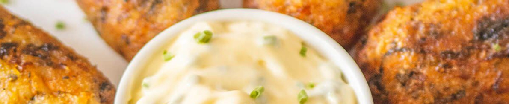
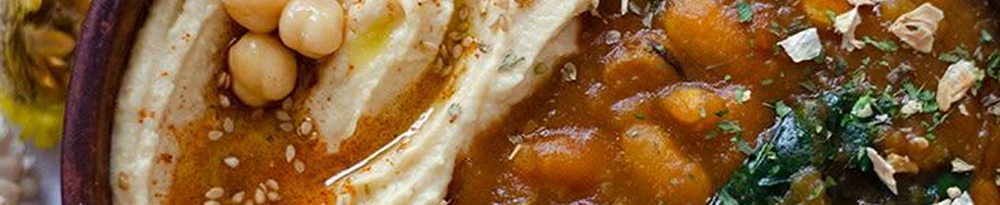
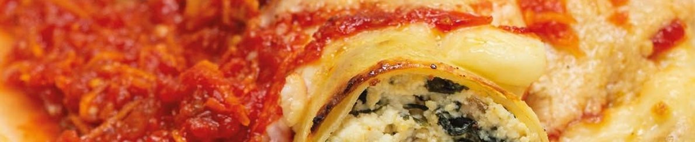

Croquetas de arroz y verduras
Crujientes por fuera y melosas por dentro, ¡vas a alucinar con estas croquetas de arroz y verduras veganas!. Fáciles, ¡y listas en 20 minutos!. Esta es una receta para cuando te ha sobrado arroz cocido. Es muy práctica ya que puedes aprovechar lo que tienes en la heladera.
Ver receta

Potaje lento de Alubias blancas
Su textura es cremosa, su sabor reconfortante y además es un plato saludable, rico en proteína vegetal y muy saciante. De esta receta salen 3 raciones generosas. De esta manera pueden guardar en la heladera y comer en los próximos días o directamente congelar para consumirlo a largo plazo. A disfrutar!
Ver receta

Canelones de verdura con Salsa blanca o roja
Delicadas láminas de masa casera envuelven un suave relleno de espinaca fresca y ricota cremosa, cubiertas con una fina capa de salsa blanca o tomate natural al estilo del bodegón porteño. Un clásico que une la calidez de la cocina de las abuelas con la frescura y el sabor de la mesa contemporánea.
Ver receta